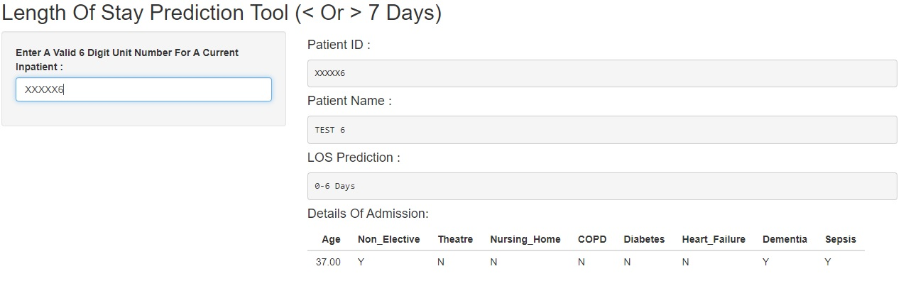
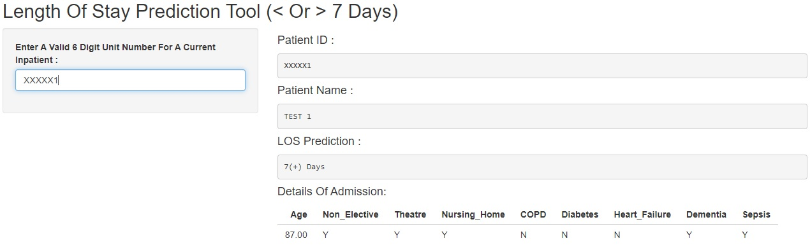

# load packages
library(stats)
library(dplyr)
library(randomForest)
# set seed
set.seed(10)
# dataset preparation
Results <- read.csv("DATASET", header = TRUE, stringsAsFactors = TRUE)
# check dataset
head(Results)
# split data into testing and training
index <- sample(2, nrow(Results), replace = TRUE, prob = c(0.7, 0.3))
# training
Training <- Results[index == 1, ]
# testing
Testing <- Results[index == 2, ]
# build model
MODEL <- randomForest(Length.Of.Stay ~ ., data = Training)
# evaluate model accuracy through a confusion matrix
LOS_Pred <- predict(MODEL, Testing)
Testing$LOS_Pred <- LOS_Pred
CONFUSION_MATRIX <- table(Testing$Length.Of.Stay, Testing$LOS_Pred)
ACCURACY <- sum(diag(CONFUSION_MATRIX) / sum(CONFUSION_MATRIX))
ACCURACYIntroduction
Hi! This is my first blog post here and I’m excited to have the chance to share my thoughts with you on this topic, as it is something that has seemingly exploded in popularity over the last few years. For context, I currently work as an “Information Development Analyst” within an acute NHS trust. So naturally, I’m constantly exploring new ways of working within healthcare analytics and business intelligence, as well as aspects of data and technology that I might just think are interesting! This post specifically focuses on predictive analytics within R and my journey developing a prediction model within my organisation.
Machine learning for predictive analytics is becoming increasingly popular (and essential) throughout healthcare, particularly within the NHS. Machine learning models within healthcare can be successfully deployed for a variety of use cases. This area of healthcare analytics is constantly growing as new techniques become more prevalent and machine learning resources become more accessible to information professionals based within NHS organisations. While some of these solutions are deployed on a large scale and require the investment of an abundance of time and money, smaller scale models can often be developed in-house, taking advantage of the wide array of tools that R has on offer for machine learning. In this example, I will show how I developed a random forest model to predict whether or not a patient’s length of stay was going to be less than (<) or greater-than or equal-to (>=) 7 days. The data used to train such a model would be available for most data analysts within the NHS through their trust’s internal electronic patient record systems.
The code shown for this particular machine learning task is specific to the context and model discussed in this blog post. This is not a comprehensive guide on how to approach a machine learning task within R or a complete overview of all the relevant considerations necessary. While I hope that readers find this post interesting, anyone considering undertaking something similar should seek the relevant guidance to do so.
NoteThe objective of this model is to classify whether or not a patient’s length of stay will be < or >= 7 days, rather than predicting the exact number of days!
Data Set Preparation & Variable Selection
The variables used in the data set to train the model were selected as it was thought they would be useful as indicators for a patient’s length of stay. These included age, elective / non-elective admission, whether the patient was admitted from a nursing home or not, theatre records, the patient’s sepsis status and the presence of particular comorbidities (that is previous diagnosis of dementia, chronic obstructive pulmonary disease, heart failure and diabetes).
To allow the model to be trained on this data, all of the categorical variables had to be re-categorised using “one hot encoding”, where the values of each of these variables would then be represented in a separate column identified with a 1 or a 0. This alteration allows the input into the model to be numeric. As only categorical variables needed to be encoded, age did not need to be altered.
NoteFor example Instead of the comorbidity columns stating “Yes” or “No” for each condition, this would be represented with separate columns. These columns would state whether the patient had each relevant diagnosis with a 1 for true and 0 for false.
Preparation Of Model
The R script used to prepare and evaluate this model utilised the following packages: “stats”, “dplyr” and “randomForest”. Initially, the data set was loaded into R from a CSV file and the columns checked (for example formatting and column names). In this example, the CSV file is referred to as “DATASET”. Following this, the data set is split into a testing section and a training section. For this I opted for a split of 70% training and 30% testing. Then, the random forest model is built, specifying that the field “Length.Of.Stay” is the variable I am looking to predict and that I want to make this prediction based on all of the other variables available in the data set. Lastly, the model accuracy is evaluated through a confusion matrix. This model presents an accuracy of 85.11%, when evaluating the predictions made from the testing data set.
CautionIn this case, set.seed(x) is important in order to make your results reproducible. If a different seed number was used to re-train the model, your final accuracy score may differ, even though the same data set was used for training.
Interactivity For Users
Once the model has been created and evaluated for usability, you may want to start thinking about potential methods to make the model accessible within your organisation. Ideally, a user would be able to input values for each variable into the model in as minimal clicks as possible. In this case, I experimented with a shiny application that would likely be the best way for users to input values into the model to receive a prediction.
However, it would not be ideal for the user to have to go through clinical notes and various systems to find the information they need for every variable. The solution arrived at for this issue was that a table would be created in SQL containing all of the relevant information for each variable, for any patients that have been admitted on the trust’s primary electronic patient record system. The relevant information for all of the variables would then be retrieved from various systems. This would be entirely managed within SQL. The data from SQL would be retrieved for use in R with the “odbc” package. In the example shown below, the table that contains a regularly updated feed of daily admissions is referred to as “[Database].[dbo].[Table]”.
Below, two examples are shown of test data inputted into the shiny app, one returning a prediction of “0-6 Days” and one returning a prediction of “7(+) Days”.
0-6 Days

7(+) Days

Considerations
Hosting for shiny applications is not currently widely available outside of public facing solutions, which would obviously not be appropriate for something such as this (that is information governance concerns).
Other machine learning model types available in R, such a “logistic regression” or “XGBoost” could have also been applied here for classification, as an alternative to random forest.
An NHS organisation may have developed similar machine learning models using alternative methods, such as python rather than R.
Final Thoughts
If you are working within business intelligence or data analytics within a healthcare space, you have likely encountered some form of machine learning tool, whether this is something you have developed yourself or made use of from a third-party application. It’s important to acknowledge that there are different scales of how far a machine learning model can be implemented within an organisation. How far an NHS trust integrates such technology may entirely depend on their IT infrastructure, budget and resources. However, the machine learning tools available in R certainly lower the barriers to entry if an organisation did wish to incorporate these methods into their analytics. Lastly, while the technology for projects such as this has certainly become more accessible, the time and consideration regarding variable selection, model testing and performance evaluation is still fundamental for a model to be accurate in its predictions and therefore useful from an operational perspective.
Thank you for taking the time to read this. Hopefully you found this interesting (and potentially even useful)!
Image from Stock Photos, Royalty Free Laptop with analytics Images | Depositphotos
{kind=link}